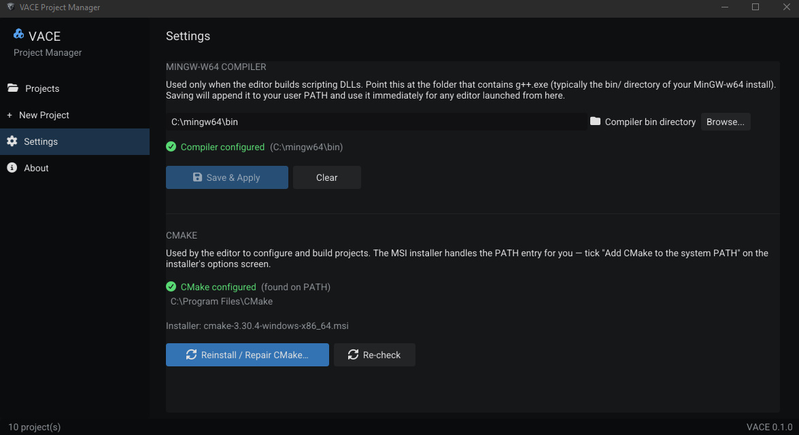

Installation
Everything you need to run the VACE editor, and the optional MinGW-w64 setup you need to write C++ scripts. Read Getting started first if you haven't yet, since that page walks you from a fresh download to a running scene.
The release zip includes CMake as an MSI. The Project Manager runs the installer for you, verifies it was configured, and handles the rest. The only thing you download separately is MinGW-w64, and only if you plan to write C++ scripts. The Project Manager also handles adding MinGW-w64 to your environment variables, so there is no PATH editing on your side.
System requirements
| Component | Requirement | Notes |
|---|---|---|
| OS | Windows 10 or 11, 64-bit | The only supported platform in v0.1.0 |
| GPU | OpenGL 4.3 support | Required by the renderer. Older GPUs (including many from before 2012) will not run the editor. |
| RAM | 4 GB minimum, 8 GB recommended | The engine was originally developed on an 8 GB laptop |
| Disk | About 1 GB for the engine | Projects add more depending on assets |
| Toolchain | Optional: MinGW-w64 | Only needed for C++ scripting. CMake is bundled with the engine. |
The renderer targets OpenGL 4.3. If your GPU reports 4.2 or lower, the editor will fail to initialize. This is most common on laptops from before 2012 and on integrated GPUs on older Intel CPUs. Update your graphics driver first; if the version is still below 4.3, the engine will not run on that machine.
Download
VACE releases are distributed as a zip on GitHub Releases. The file is named like this:
vace_engine_windows_stable_v0.1.zipThe download link will appear on the Vanta Games GitHub releases page once the first stable release is published.
Extract the zip
Extract the zip to a folder you own and can write to, for example
C:\VACE\. Do not extract inside Program Files, and do not run the
editor from inside the zip.
After extraction you should see:
vace_engine_windows_stable_v0.1/
├── build/
│ └── windows-mingw-debug/
│ └── projectmanager/
│ └── VACE_ProjectManager.exe
└── docs/Keep this folder in place. Your projects live elsewhere. If you move the engine folder later, you don't need to move your projects.
First launch
Run VACE_ProjectManager.exe from:
build\windows-mingw-debug\projectmanager\VACE_ProjectManager.exeThe Project Manager opens with an empty projects list. That is expected. From here you can create or open projects. See Getting started > Step 3 for the project creation walkthrough.
The editor and Project Manager are not the same executable. The Project Manager creates and opens projects. Once you open a project, the editor launches and loads it.
Setting up MinGW-w64 (optional)
You only need MinGW-w64 if you plan to write C++ scripts. If your project has no scripts, skip this section entirely. Building and shipping a game does not require a compiler on the player's machine.
CMake ships in the zip and is installed from the Project Manager, so the only thing you download here is the compiler.
1. Download MinGW-w64
VACE is built and tested with the WinLibs build of MinGW-w64. Go to this release page:
https://github.com/brechtsanders/winlibs_mingw/releases/tag/15.2.0posix-13.0.0-ucrt-r3On that page, download the build whose file size is about 252 MB. The exact filename varies between WinLibs releases, but the size is the tell: the 252 MB zip is the one you want. Ignore the smaller builds.
Extract the zip anywhere you like. Something like C:\mingw64\ is
fine. Inside, you will find a bin folder containing
g++.exe, gcc.exe, and the rest of the toolchain.
2. Install CMake from the Project Manager
The VACE zip contains a CMake MSI. You install it from the Project Manager, not by running the MSI yourself:
- Open the Project Manager.
- Open the Settings tab.
- Click the button to install CMake. The Project Manager launches the MSI installer.
- In the CMake installer, make sure you tick the option to add CMake to the system PATH. This is the only step where the CMake installer asks you a question that matters.
- Finish the installer and return to the Project Manager.
When the installer closes, the Project Manager checks the system to confirm CMake is now on the PATH. If it is, it shows a confirmation that setup is complete. If not, it tells you what to check. The whole thing is automated from the Project Manager side; you do not open a terminal.
3. Point the Project Manager at MinGW-w64
In the same Settings tab, the Project Manager has a
Browse button for the MinGW-w64 compiler folder. Click it and
select the bin folder inside the MinGW-w64 folder you extracted
(for example C:\mingw64\bin).

Once the path is selected, click Configure. The Project Manager:
- Adds the selected
binfolder to your environment variables, so you never touch PATH yourself - Verifies the compiler actually runs
- Verifies CMake was configured correctly
- Reports that everything is set up, or tells you what is wrong if something failed
After Configure finishes, VACE remembers the toolchain for every project on that machine. You do not need to redo this unless you uninstall MinGW-w64, move it to a different folder, or change your PATH manually in a way that breaks the entries the Project Manager added.
Verifying the install
To confirm the whole install works end to end:
- Create a new project from the Project Manager.
- Double-click it to open in the editor.
- Create a scene, add a mesh, press Play.
- If you set up MinGW-w64: create a script from the inspector, press Play, and confirm no build errors appear in the console.
If all four steps pass, the engine and (optionally) the toolchain are set up correctly. If any fails, see the next section.
Troubleshooting
Editor does not launch, or crashes immediately
OpenGL 4.3 is missing. Check your driver version, then use a tool like
GPU-Z (Windows) to see the reported OpenGL version. If your GPU
supports 4.3, update your graphics driver. If it does not, the engine will
not run on that hardware.
Project Manager opens but no projects appear
That is the expected first state. Use New Project to create one. See Getting started > Step 3.
Play does nothing or crashes with a script error
If the project has scripts, the compiler path is probably wrong. Open the
Project Manager's Settings tab, use Browse to re-select the folder containing
g++.exe, and click Configure again. If the project has no
scripts, this section does not apply.
The Project Manager says CMake is not configured
CMake was probably installed without the "add to PATH" option ticked. Re-run the CMake install from the Project Manager's Settings tab and this time tick that option. The Project Manager will re-check and confirm.
I downloaded the wrong WinLibs file
There are several builds on the WinLibs release page. The one VACE is tested with is the 252 MB download at: 15.2.0posix-13.0.0-ucrt-r3. Delete the wrong one and download the 252 MB zip.
I moved the engine folder and now projects fail to open
Projects store an absolute path to the engine root. If you move the engine, you may need to reopen the project in the Project Manager, which will prompt you to re-select the engine path.
Where do the docs live?
These pages are inside the engine's docs/ folder. The editor's
Help > Documentation menu opens them in your default
browser. No internet connection is required.